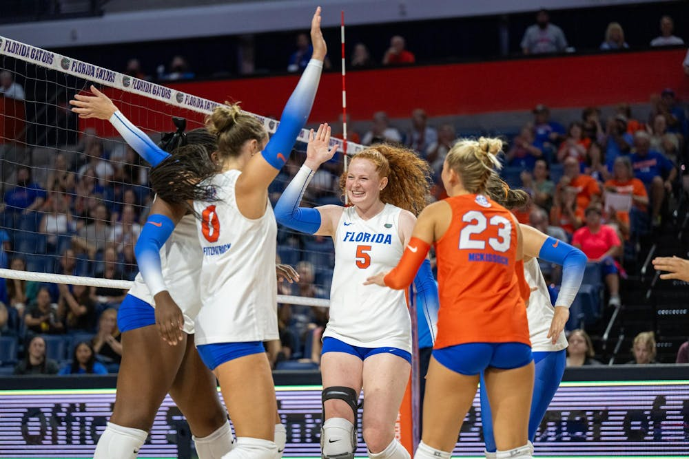

Set, Rotate, Dominate
By Grace Qian | December 07, 2024

In the ever-evolving landscape of NCAA volleyball, the decision between running a 5-1 or 6-2 rotation can significantly shape a team’s offensive strategy and overall success. The 5-1 system, which relies on a single setter playing all six rotations, offers consistency in sets as well as allowing for slide attacks and offensive setters to make front row attacks. Meanwhile, the 6-2 rotation, featuring two setters and always three front-row attackers, emphasizes versatility and depth in offensive options. In this article, I’ll take a closer look at how these two rotations have been deployed by five prominent teams in recent NCAA history. I’ll also dive into the past five NCAA championships (Elite 8 teams from 2020 to 2024 predicted as of 11/11/24) to explore how rotation choices have influenced the journey to victory, shedding light on the broader strategic trends in the collegiate game. (side note: because the 2024 season has not finished yet, I am using the top 8 ranked teams as of November 10, 2024)

Over the past five seasons, I found that only 12.5% of Elite 8 teams have relied on the 6-2 system. This low adoption rate raises an interesting question: Why don’t more teams utilize the 6-2 rotation, especially when it seems to offer an offensive advantage by having three front-row attackers at all times?

Is 6-2 an inferior strategy in comparison to 5-1?
To investigate this, I compiled and analyzed data from the top teams in the NCAA, comparing key stats like hitting percentage, kills per set, and blocks per set for teams using the 5- 1 and 6-2 rotations. The results offer fascinating insights into the relative strengths and weaknesses of each system.

Kills Per Set: The 5-1 Rotation's Edge
Teams using a 5-1 system consistently outperform 6-2 teams in terms of kills per set. The average kills per set for 5-1 teams range from 13.5 to 15.5, while 6-2 teams average 12.1 to 13.0 kills per set. Despite the theoretical advantage of an extra front-row attacker in the 6-2 system, the 5-1 system’s higher kill rates suggest that setter consistency may outweigh the benefit of additional attackers. The lack of disruption in offensive rhythm from a single setter likely contributes to more efficient offensive production, as evidenced by these higher kill rates.

Hitting Efficiency: The Power of Consistency
The trend toward higher hitting percentages among 5-1 teams continues. Teams utilizing a 5-1 system see hitting percentages ranging from 0.24 to 0.36, whereas teams in the 6-2 system tend to fall between 0.26 and 0.31. The consistent setting from a single player in the 5-1 system likely contributes to better offensive flow and fewer attacking errors, allowing for more effective and efficient offensive execution. This difference in efficiency underscores the importance of setter consistency in achieving high hitting percentages.

Blocks Per Set: A Closer Look at Defensive Strength
On the defensive side, the data is more nuanced. Teams using the 6-2 rotation are competitive in blocking, often outperforming their 5-1 counterparts in this area. The average blocks per set for 6-2 teams hover around 2.59, while 5-1 teams typically average 2.43 blocks per set. Interestingly, both systems have seen an increase in block rates over the last five seasons, reflecting a broader trend toward stronger defensive play across the board. While 6-2 teams’ depth in defensive rotations may contribute to higher block numbers, the numbers suggest that blocking is not necessarily a deciding factor in the choice of rotation system, as both systems perform well in this area.

When comparing assists per set, 5-1 teams consistently generate between 10 and 12 assists per set, while 6-2 teams typically have a range of 9 to 11 assists per set, with a noticeable variation due to the presence of two setters. This variation in the 6-2 system may cause some inconsistency in offensive execution, while the steady performance of a single setter in the 5-1 system provides a more stable offensive platform. This consistency in setting likely explains why top teams might prefer the 5-1 system.
Case Study: Wisconsin’s 2023 Season – Maximizing Team Potential
Wisconsin's 2024 roster presents a fascinating case study in how to optimize a 5-1 rotation despite traditional height disadvantages. Their statistical breakdown reveals several key strategic elements:

- Setting: Primary setter Izzy Ashburn (6.29 assists/set) and MJ Hammill (5.13 assists/set)
demonstrate exceptional efficiency despite being shorter than their front-row teammates
- Both setters compensate with superior defensive skills:
- Ashburn: 2.39 digs/set, 29 service aces
- Hammill: 2.30 digs/set, 23 service aces
- Offense and Blocking: The Badgers' attack distribution shows masterful use of multiple
offensive weapons (having a hitting percentage over 0.300 is considered exceptional by
the way):
- Sarah Franklin leads with 4.15 kills/set and a .300 hitting percentage
- Carter Booth demonstrates remarkable efficiency with a .431 hitting percentage and 1.56 blocks/set
- Anna Smrek contributes 2.67 kills/set with an impressive .401 hitting percentage
- Caroline Crawford maintains defensive dominance with 1.35 blocks/set
Conclusive Strategic Implications
While the 6-2 rotation provides clear advantages in terms of physical recovery, mental benefits, and tactical flexibility, the data indicates that the consistency and rhythm established by a 5-1 system still gives teams an edge at the highest levels of play. The 6-2 rotation allows setters to rest during back-row rotations, reducing physical strain, especially during long tournaments. This system also offers mental benefits, as setters can observe the game from the bench, receive coaching during breaks, and reduce decision-making fatigue. On top of that, the tactical flexibility of the 6-2 allows teams to tailor their offensive strategies based on opponent matchups, creating built-in redundancy in the system with two setters. Despite these advantages, only 12.5% of teams in the Elite 8 have chosen a 6-2 system over the last five seasons, suggesting that the additional depth may not be enough to overcome the advantages of consistency.
However, the flexibility of a 6-2 rotation becomes even more valuable in situations where a team faces injuries to its primary setter. A prime example is Florida’s 2023 season, where the Gators were forced to adjust their rotation due to the injury of star setter Alexis Stucky. In such a scenario, the 6-2 system offers an immediate tactical advantage, providing a built-in contingency plan that allows the team to continue running a fluid offense without the need for drastic system overhauls. Having two setters in the rotation can help mitigate the loss of a key player, giving the team the ability to continue executing offensive strategies with minimal disruption.
Wisconsin’s 2023 season serves as another powerful case study, showcasing how a team can maximize its setter strength while mitigating traditional physical limitations. The Badgers’ setters—Izzy Ashburn (749 assists) and Sydney Hammill (564 assists)—demonstrated that effective distribution and tactical awareness can offset any height disadvantages, leading to impressive offensive results. Their success underscores the importance of building systems around players' strengths, whether those systems rely on a 5-1 or 6-2 rotation.
Ultimately, the key to success in NCAA volleyball isn’t tied to the rotation system itself, but to how well the system is tailored to the team's unique personnel and how effectively it's executed on the court. The data suggests that, while the 6-2 system offers flexibility, depth, and potential blocking advantages, the 5-1 rotation’s consistency remains the preferred choice for most Elite 8 teams due to its ability to maintain offensive flow and reduce errors. However, when faced with unexpected circumstances such as injury to a key player, the adaptability of the 6-2 system may offer teams the opportunity to weather the storm and continue competing at a high level. As we look ahead to future seasons, this trend is likely to continue, though the versatility of the 6-2 system will undoubtedly continue to appeal to teams with specific needs or tactical goals.